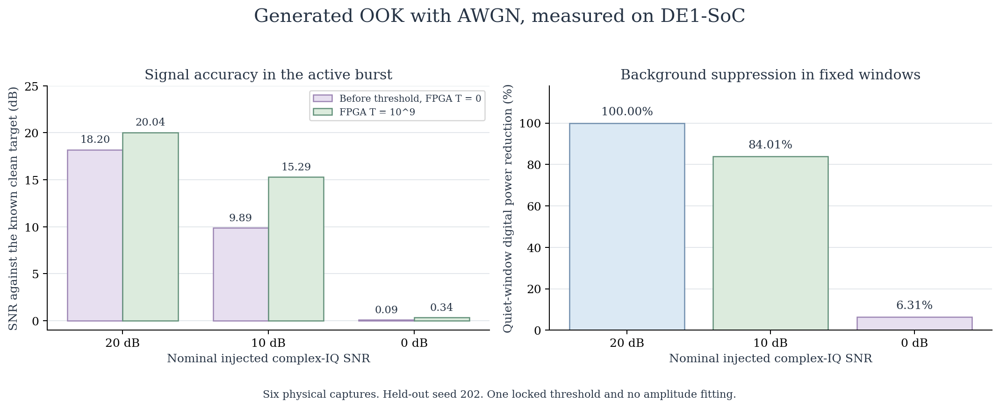
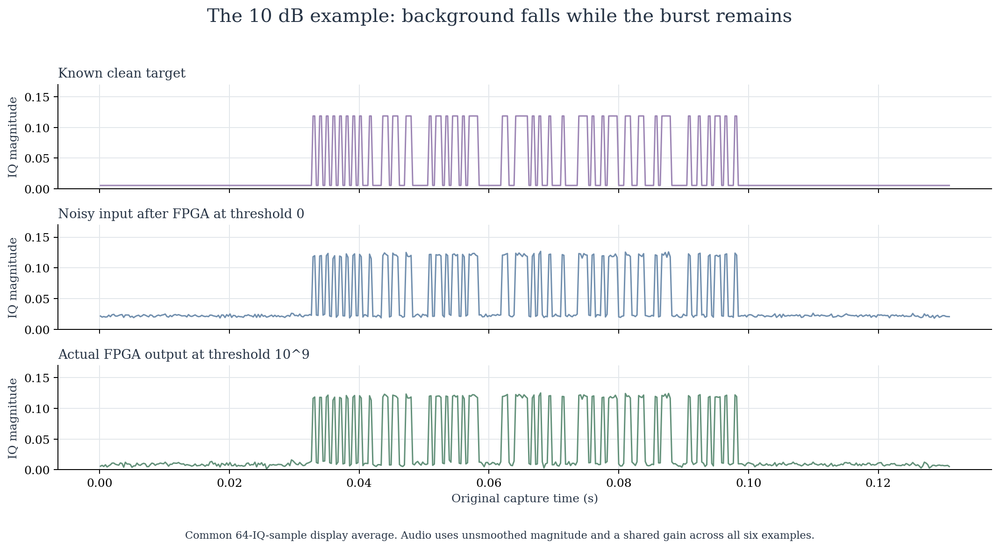
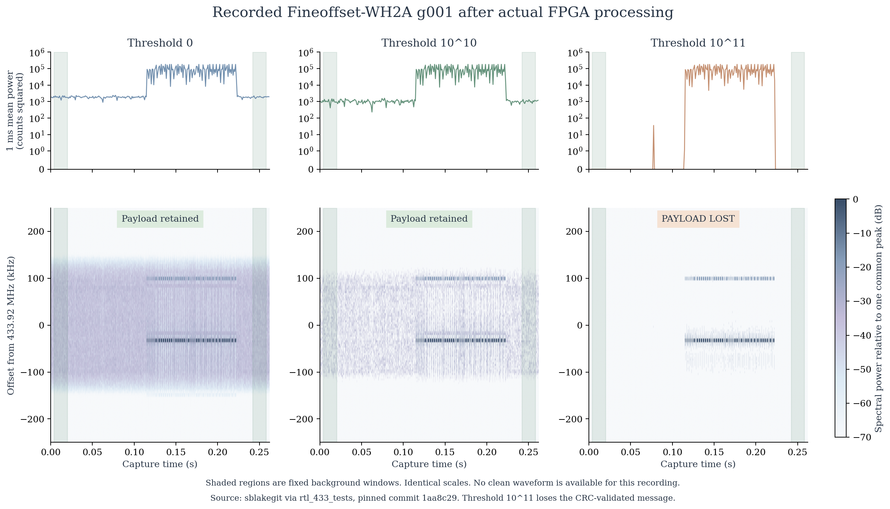

Keep the sensor burst.
Reduce the weak background.
A radio monitor receives a short telemetry message surrounded by background energy. The FPGA applies an adjustable spectral threshold. The useful question is how much background and spectral data can be removed while the wanted signal survives.
These are results from twelve previously completed DE1-SoC runs. This offline page replays their data and does not connect to a board.
From an RF file to a checked result
The TRF1 adapter feeds the existing real-signal pipeline. The board returns a reconstructed waveform through IFFT and WOLA, plus TSP1 spectral packets. The laptop uses the waveform to recover I/Q and check messages, and uses TSP1 for spectral inspection.
A controlled experiment with a known clean target
An on-off keying burst was generated and mixed with complex additive white Gaussian noise, or AWGN. One threshold was selected with tuning seed 101 and locked before held-out seed 202 was processed on the board. This is a white-noise model, not a physical thermal-noise recording.

The same fixed threshold helps the 10 dB case substantially and the 0 dB case only slightly. The coherent detector already has zero bit errors before filtering. These results do not demonstrate improved receiver decoding.

Hear the signal-strength envelope
The amplitude of an added 800 Hz tone follows the recovered I/Q magnitude. Time is slowed by 8 times. These are sonifications of actual FPGA captures of generated RF inputs, not speech or audio transmitted by a sensor.
All six files share the same gain. There is no per-file normalization, automatic gain control or noise gate. Before means actual FPGA output at threshold 0. Loudness alone is not a signal-quality measurement.
Nominal 20 dB input
Measured target SNR: 18.20 dB before, 20.04 dB after. Quiet-window digital power reduction: 100.00%.
Nominal 10 dB input
Measured target SNR: 9.89 dB before, 15.29 dB after. Quiet-window digital power reduction: 84.01%.
Nominal 0 dB input
Measured target SNR: 0.09 dB before, 0.34 dB after. Quiet-window digital power reduction: 6.31%.
Real sensor recordings show the limit
Two Fineoffset-WH2A temperature and humidity recordings contain an actual receiver background. The source metadata identifies the expected payloads, but supplies no clean waveform. The background cannot be attributed specifically to thermal noise.

| Recording | Threshold | Background power reduction | Active-burst change | Expected message |
|---|---|---|---|---|
| g001 | 0 | 0.00% | 0.00% L2 | Retained |
| g001 | 1010 | 44.57% | 6.53% L2 | Retained |
| g001 | 1011 | 100.00% | 14.26% L2 | Lost |
| g004 | 0 | 0.00% | 0.00% L2 | Retained |
| g004 | 1010 | 44.12% | 6.41% L2 | Retained |
| g004 | 1011 | 99.96% | 14.34% L2 | Retained |
L2 measures change from the unfiltered baseline, not error against a clean waveform. Background power is measured in fixed finite digital windows. Both recordings are from one sensor family.
Inspect the data and its origin
All twelve physical waveform and TSP1 outputs matched their fixed-point references. The page preserves every measured hardware threshold. The separate software screen retains all 76 rows and is labeled independently.
Recorded samples: sblakegit via rtl_433_tests, pinned commit 1aa8c29d6b9383739d1aeed495dbc5069b704392.
Original g001 RF recording · Original g004 RF recording
The inspected upstream metadata did not identify an explicit sample license. External raw recordings are linked upstream, and their listening conversions are not bundled. The downloadable RF inputs and WAV examples on this page come from project-generated AWGN fixtures. Numerical observations are presented with source attribution.
Run python render.py with NumPy, SciPy and Matplotlib to reproduce the figures and audio from the published arrays. The renderer checks hashes, recomputes the six AWGN SNR results and validates WAV readback. It does not execute the FPGA.